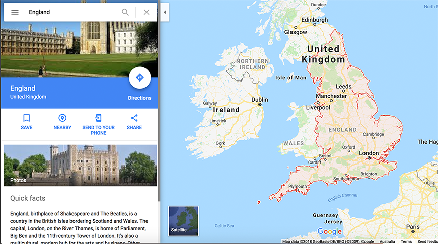
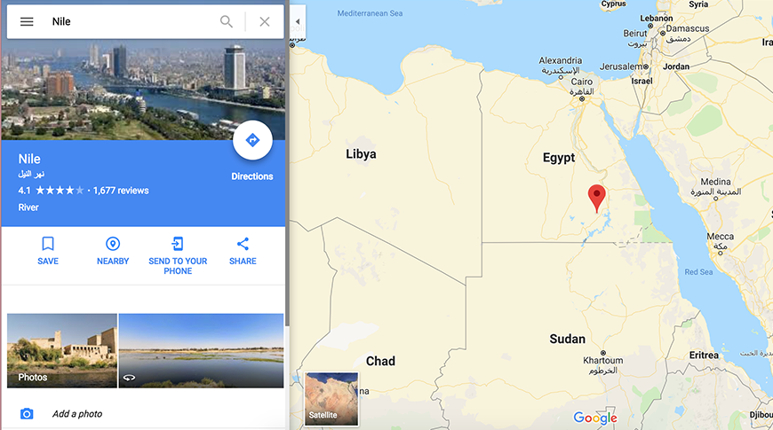
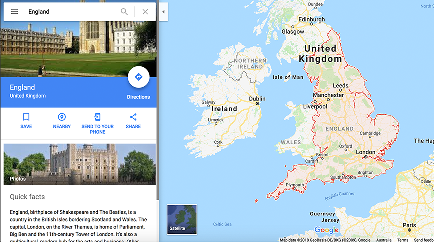
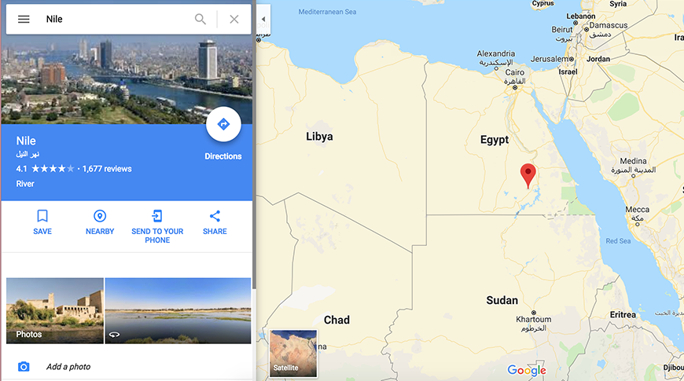
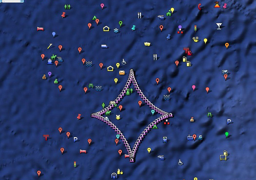

This travel poetry metioned many countries and places such as China, England, Nile Egypt.
Following images are the main places what this poetry metioned.
 



Geo Goo using many different kind of small patterens on the map to make a big image. It's a very interesting way to represent the whole image.
My idea is using google maps to point out the places and using the emojis to connect all together. And the emojis are metioned by the poetry. Following the list is the emoji will use in the map: